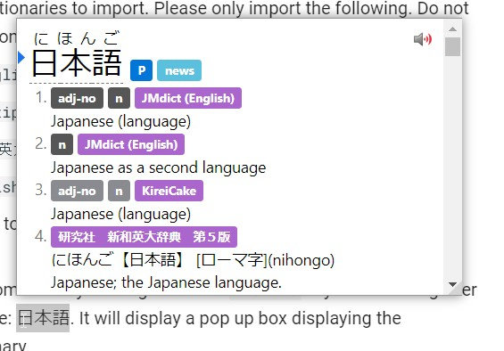

Yomichan Setup Tutorial¶
What is Yomichan?¶
Yomichan is a browser extension that allows you to look up Japanese words with both the meaning and the reading on web pages with ease. As you can see, I made a dedicated tutorial for it, even though the process is simple and there are already guides out there, only so I can stress how it is a very important tool when it comes to learning Japanese. Yomichan also has extra features such as Anki flashcard creation, which makes it a powerful learning tool.
Getting Started¶
Yomichan is available for both Chromium and Firefox based browsers. You can find the respective versions below.
Chrome Web Store
Firefox Add-Ons
Once installed, it will open a new tab page, just close it for now so we don't confuse each other.
Acquiring Dictionaries¶
When you first install Yomichan, you need to load dictionaries into it in order to use it.
These come in .zip extension and are not to be extracted by the user.
Download my pack of Yomichan dictionaries below. This will have everything you need and (probably) don't need. 
NEW Version 4 Google Drive
Once downloaded, extract the .7z to any location on your computer. You can use 7-Zip for this.
Do not touch the .zip files inside.
Installing Dictionaries and basic usage¶
Updated for the "new" settings page.
- Click on the
 icon in the browser toolbar.
icon in the browser toolbar. - Click on the icon to access the settings page.
- On the left sidebar, click on "Dictionaries" and then click on "Configure installed and enabled dictionaries…"
- Click the "Import" button on the bottom.
- Here's where you select the dictionaries to import. Please only import the following. Do not import every dictionary if you don't need to.
[Bilingual] JMdict (English).zip[Bilingual] KireiCake.zip[Bilingual] 研究社 新和英大辞典 第５版.zip[Kanji] KANJIDIC (English).zip
- Please wait for the dictionaries to import. This could take a while if you are using a mechanical hard drive.
- Once complete, you can test Yomichan by holding down the Shift key and hovering over Japanese text. Here is a sample: 日本語. It will display a pop up box displaying the definitions separated by dictionary.
Click anywhere outside of the box or use theEsckey to dismiss. Click on an individual kanji in the headword to view kanji information (only functional with KANJIDIC installed). - You can click the
 button to hear the word being pronounced by a native speaker.
button to hear the word being pronounced by a native speaker.

Pop up box size can be edited with advanced settings enabled.
A full dark mode can be enabled in the settings too.
JMDict is the dictionary hosted on Jisho.org. Jisho.org is not its own dictionary, rather it's a portal that accesses JMDict. This is the most common Japanese to English dictionary.
KireiCake is based on an older version of JMDict but includes extra entries for slang. You may often see duplicate entries when used in tandem with JMDict, but for the entries that are exclusive to KireiCake, you should keep it.
研究社 新和英大辞典 第５版 (Kenkyuusha New Japanese-English Dictionary, 5th Edition) is a Japanese-English dictionary intended for Japanese people. It has many example sentences which can prove to be very useful for Japanese learners. A variation of this with example sentences stripped called is [Bilingual] 新和英.zip can also be found in my dictionary pack (not recommended).
KANJIDIC is a kanji dictionary, it allows you to view information of individual kanji.
You can use the icon to access Yomichan Search. Where you can use Yomichan as a standalone Japanese to English dictionary, however, Yomichan does not support any advanced dictionary features.
Allowing access to file URLs¶
Enabling this allows you to use Yomichan on local files such as .HTML files.
PDF Files
On Chrome, it is impossible to use Yomichan on PDF files.
Chromium:
- Right click the 
- Click "Manage Extensions"
- Enable "Allow access to file URLs"
Firefox:
- Enabled by default.
Anki Setup¶
Due to there being an already wonderful Anki guide with Yomichan written on the internet. I will not write about that here.
See AnimeCards Site